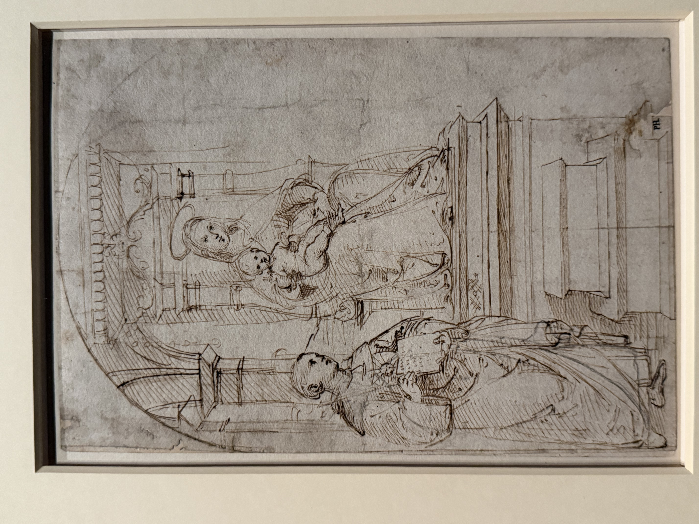

I like the background part of this draft, which shows the staggered stone columns and domes of the church. Raphael's grasp of architecture is quite objective and scientific, and Renaissance painters seem to have a deep understanding of architecture.